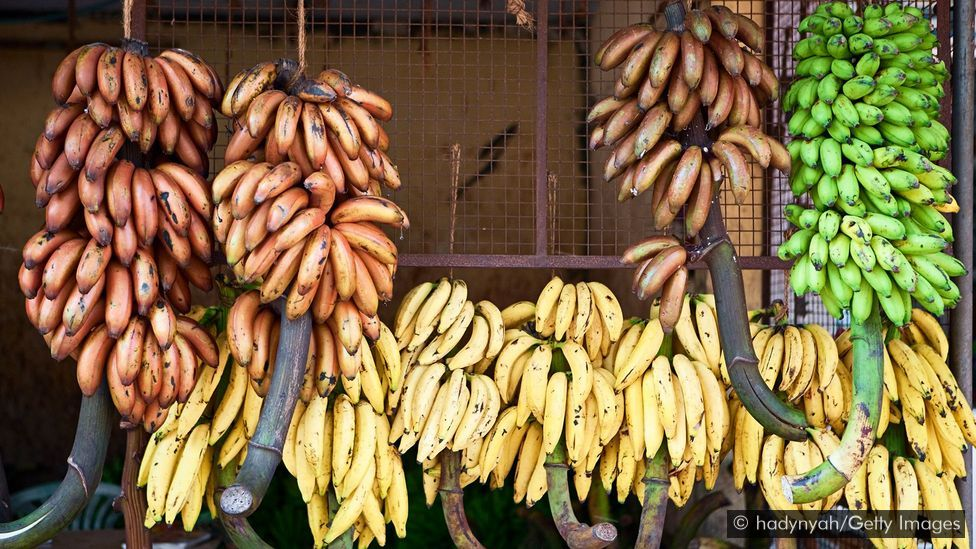

الموز: تعرف على البلد الآسيوي الذي يقدس هذه الفاكهة
Where bananas are considered sacred

منذ عشر سنوات عندما كنت حديثة عهد بالزواج، توقفت أمام متجر للخضروات على جانب الطريق في بلدة ناغركويل جنوبي الهند
لأشتري بعض الموز قبل حضور إحدى المناسبات الدينية.
A decade ago when I was newly married, I stopped by a roadside fruit stall in the South Indian town of Nagercoil
near my in-law’s home to pick up some bananas for a religious ceremony.
وحدقت مذهولة في أشكال هذه الفاكهة الغنية بالمعادن والفيتامينات وألوانها التي تتراوح من الأصفر إلى الأحمر بدرجاته
المتنوعة والبنفسجي، والتي كانت تتدلى من السقف المصنوع من الصفيح كما لو كانت كنوزا ثمينة.
I gawked at the bunches of this nutraceutical fruit, ranging from the usual shades of yellow to varying hues of red
and purple. They hung upended on hooks from the stand’s tinned roof as if they were prized possessions.
ووضع البائع على كل حزمة اسم الصنف الذي يعرف به محليا، مثل "بوفان" (الأصفر القصير) و"شيفازاي" (الموز الأحمر) وهكذا.
ولم أر قط في مدينة حيدر آباد، عاصمة ولاية تيلانغانا، حيث نشأت، هذه الوفرة في أصناف الموز المعروضة مختلفة الأشكال
والألوان.
Each bunch was tagged with a local variety name – poovan, chevvazhai, matti pazzham and so on. I had never seen such
a multitude of banana varieties in all my years growing up in Hyderabad, the capital of India's Telangana state,
around 1,200km north of Nagercoil. I just knew the modest banana simply as aratipandu in the Telugu language (and
vaazhaipazham in Tamil and kela in Hindi).
فقد اكتشفت أن هناك ما يترواح بين 12 و15 صنفا من الموز في ناغركويل، ولكل منها اسم وغرض خاص.
But here in Nagercoil, there were some 12 to 15 varieties, each with a distinct name and purpose. Suddenly, life
seemed simpler before marriage, as I got indoctrinated into the land of bananas.
ويحظى الموز في الهند بمكانة لا تضاهى، ويعد من أكثر الفاكهة استخداما في مختلف الأغراض منذ قديم الأزل. ويقبل الناس في
الهند على شراء الموز في جميع المناسبات تقريبا، نظرا لوفرته طوال العام وتنوعه وانخفاض سعره نسبيا، وأصبحت شجرة الموز
جزءا أصيلا من النسيج الثقافي للهند.
The banana has been India’s most versatile and revered fruit from time immemorial. Owing to its nativity, perennial
abundance and affordability, it’s the go-to fruit for nearly every occasion, and the banana tree in its entirety is
deeply woven into the country’s cultural fabric.
وتُزرع أنواع الموز المحلية في الحدائق الخلفية للمنازل في جميع أنحاء الهند. لكن في ناغركويل، التي تتميز بطقسها الدافئ
والمداري الرطب وتربتها الطفلية الخصبة، كما هو الحال في المناطق المتاخمة لسلسلة جبال غاتس الغربية جنوب الهند، تنمو
أشجار الموز بكثرة في الحدائق والمزارع وفي الغابات.
While indigenous varieties are cultivated in home gardens across India, they grow profusely both domestically and
wild in places like Nagercoil, largely due to the warm and humid tropical climate and fertile, loamy soil conditions
found in regions abutting the Western Ghats in South India.
ويقال إن الموز واحدا من أقدم الفواكه وأكثرها انتشارا على وجه الأرض. وانتقل الموز من أصوله في الهند وجنوب شرق آسيا
إلى جميع أنحاء العالم. واليوم، أصبح الموز واحدا من أكثر الفاكهة استهلاكا في العالم، وحتى في أثناء وباء كورونا، كانت
وصفة خبز الموز من أكثر الوصفات التي بحث عنها الناس على محرك البحث غوغل.
The banana is believed to be one of the world’s earliest and most cultivated fruits and has travelled far and wide
from its humble origins in India and South-East Asia. Today, it’s one of the world’s most-consumed fruits, and even
during these pandemic times, comforting and easy-to-make banana bread has been trending on Google searches around
the world.
وتشير السجلات التاريخية إلى أن الإسكندر الأكبر انبهر بمذاق هذه الفاكهة العجيبة وحملها معه من الهند إلى الشرق الأوسط،
حيث أطلق عليها التجار العرب اسم "بنان" كونها تشبه الإصبع. ووصلت فيما بعد إلى أفريقيا وأمريكا اللاتينية ومنطقة
الكاريبي في القرن الخامس عشر، ومنها إلى برمودا. ثم شحنت من برمودا إلى إنجلترا في القرنين السابع والثامن عشر.
Historical records mention that Alexander the Great was impressed with the exotic taste of the kadali phalam (the
Sanskrit name for the banana) and carried the fruit from India to the Middle East, where it was rechristened as
banan (an Arabic word for finger) by Arab traders. It later reached Africa, Latin America and the Caribbean during
the 15th Century, and then headed north to Bermuda. From Bermuda, bananas were shipped to England as novelty fruits
during the 17th and 18th Centuries.
وفي عام ۱۸۳۵، زرع جوزيف باكستون، كبير البستانيين بضيعة تشاسويرث في دربيشاير، صنفا أصفر جديدا من الموز وأطلق عليه اسم
"ميوزا كافنديشاي"، نسبة إلى اسم عائلة صاحب الضيعة، ويليام كافنديش.
And in 1835, head gardener of Chatsworth Estate in Derbyshire, Joseph Paxton, cultivated and grew a new yellow
variety and named it musa cavendishii, after the family name of his employer, William Cavendish.
ورغم حجمه الصغير نسبيا ومذاقه المعتاد مقارنة بالأصناف الأخرى، أصبح صنف كافنديش النوع المفضل والأكثر شيوعا في الدول
الغربية، كونه متجانس الثمار ومقاوما للآفات وعالي الإنتاجية.
In spite of its relatively small size and somewhat bland taste when compared to other varieties, the Cavendish’s
uniformity, resistance to disease and high yielding capacity has made it the darling variety of the Western world.
ويزرع الآن في الهند صنف "كافنديش جي ۹" الذي طورته إسرائيل، لبيعه تجاريا. لكن الأصناف الأصلية من الموز وكذلك موز
الجنة، لا تزال تزرع في أقصى جنوب الهند.
In India, the high-yielding G9 Cavendish variety (from Israel) is now produced commercially across the country;
however, native banana varieties – and their plantain cousins – are still cultivated, mainly in India’s southernmost
parts.
ويتغنى سكان هذه المناطق بتعدد استخدامات بعض الأصناف من الموز، مثل بوفان وموندان وبيان (التي سميت على اسم آلهة
هندوسية)، ومذاقها وقوامها.
Locals often sing the praise of varieties like poovan, mondan and peyan (named after the holy Hindu trinity of
Brahma, Vishnu and Shiva respectively) for their versatility, flavour and texture.
ويعد الموز في الهند علاجا لكل داء، سواء كان بدنيا أو روحانيا. ولا أنكر أني عندما كنت صغيرة، لم يرق لي على الإطلاق
قوام الفاكهة اللزج بعد نضوجها، لكني كنت أستسلم لإلحاح أمي وأبتلع قطع الموز لتقوية المناعة بعد أن تعافيت من الصفراء،
أما جدتي فكانت تحثني على التهامها تقربا من الآلهة بعد المناسبات الدينية.
In India, the banana is considered a remedy for all ills, physical and spiritual. As a child, the slimy, pithy
texture of the fruit when ripe had never appealed to me. Yet I remember swallowing banana chunks as my mother
pleaded with me to eat them as an immune-booster after a bout of jaundice, and my grandmother cajoled me into
devouring them as a prasadam (divine offering) after religious ceremonies.
وقد عُرفت في الوقت الراهن الفوائد الصحية العديدة للموز، فالموز الناضج غني بالبوتاسيوم والكالسيوم وفيتامين ب ٦
وفيتامين ج، ويعد مصدرا مهما للنشويات والألياف. لكن قيمة الموز العلاجية يعرفها الهنود منذ آلاف السنوات. إذ تعد شجرة
الموز مقدسة ويُنتفع بكل جزء منها، فتؤكل ثمارها وتستخدم أوراقها وأزهارها ولحاؤها في الأغراض العلاجية.
Today, bananas are widely thought to have many health benefits – a ripened banana is laden with potassium, calcium,
vitamin B6 and vitamin C, and is a rich source of carbohydrates and fibre. However, in India, they have been valued
medicinally for thousands of years. The banana tree is considered sacred and every part of it is used, be it the
fruit for eating or the leaf, flower and bark in medicinal treatments.
في الهند يعد الموز فاكهة مباركة وكثيرا ما تستخدم في الطقوس الدينية
In India, bananas are considered auspicious and are often used for religious purposes
ويقول سريلاكشمي، كبير المستشارين في طب الأيورفيدا بمركز "ناد" الصحي في دلهي: "ثمار الموز الناضجة تحتوي على عنصرين من
عناصر قوة الحياة الخمسة، وهما الهواء والأثير".
“A ripe banana is kapha predominant [having the life force elements of water and earth] and is used in treating
several skin disorders in Ayurveda,” said Dr Sreelakshmi, senior Ayurveda consultant at Naad Wellness in Delhi.
وفي طب الأيورفيدا أيضا، تستخدم أزهار شجرة الموز وجذوعها لعلاج مرض السكري، وتستخلص من الشجرة العصارة لعلاج أمراض مثل
الجذام والصرع ولدغات الحشرات.
Also, in Ayurveda, the banana flower and stem are used to treat diabetes, and the tree’s sap (which has astringent
properties) is used for ailments such as leprosy and epilepsy as well as for insect bites.
ويقول سريلاكشمي إن الاضطرابات الجسدية نفسية المنشأ، مثل ارتفاع ضغط الدم والأرق، تعالج بتغطية الدماغ بلبخة علاجية ثم
تُلف بأوراق شجر الموز، التي يعتقد أن لها تأثيرا مهدئا.
And as Sreelakshmi explained, psychosomatic disorders such as hypertension and insomnia are treated by a therapy
called thalapothichil in which the head is covered in a medicinal paste and then wrapped with a banana leaf, which
is thought to have a calming effect.
ويعد الموز الفاكهة الوحيدة المذكورة في كتاب "قانون بالي" المقدس الذي يجمع تعاليم مذهب "تيرافادا" البوذي، وهو أيضا
جزء من الثالوث المقدس المكون من المانغو والموز والكاكايا أو الجاك فروت، في الأدب التاميلي. وتعادل شجرة الموز في
الهندوسية الإله بريهاسباتي، إله الحكمة ومعلم الآلهة الهندوسية.
The banana is also the only fruit mentioned in the Pali canon (scriptures central to the Theravada school of
Buddhism), the Vedas and the Bhagavad Gita, and forms the triad of fruits, along with mango and jackfruit, called
mukkani in Tamil Sangam literature. In Hinduism, the banana tree is equated with Lord Brihaspati (Jupiter), who is
considered a guru to the Hindu pantheon.
وترتبط شجرة الموز بالخصوبة والخير. ويحرص الناس في جنوب الهند على وضع شجرتي موز مثمرتين على جانبي مدخل المنزل أو
قاعات الأعراس والأعياد الدينية وغيرها من المناسبات الخاصة. ففي البنغال، يُصنع تمثال يرمز للإلهة دورغا، إلهة الحرب
والطاقة النسائية، في مهرجان دورغا بوجو، من نبات الموز، ويغطى بالساري الأصفر.
The banana tree is also associated with fertility and bounty. Hence, in South India, a pair of banana trees with
flowering branches is placed on either side of the entrance to a home or venue during weddings, religious festivals
and other special occasions. In Bengal, during the Durga Pujo festival, a figurine symbolising goddess Durga (the
Hindu goddess of war and feminine energy) is made with a banana plant, draped in a yellow saree with a red border.
This form of the goddess is known as Kola Bou, where kola means “banana” and bou means “lady” in Bengali.
ما عن طرق تناول الموز في الهند، فهناك الكثير من الخيارات، سواء كان الموز ناضجا أو غير ناضج. فهناك أنواع من الموز،
مثل ماتي بازام، تستخدم كطعام للأطفال، في حين تستخدم أنواع مثل نيندران وراستالي، التي تحتوي على نسبة أقل من الماء ولا
تفسد بسهولة، في الكثير من الأطباق التقليدية والمعاصرة الهندية.
When it comes to eating bananas in India, there are many options, whether ripened or raw, to choose from. Varieties
like the easily digestible matti pazzham are used as baby food, while others like nendran and rasthali, due to their
longer shelf life and lower water content, are used in both traditional and contemporary Indian dishes.
وتقول شانتالا ناياك شينوي، التي تكتب في مدونة "عشق التوابل" للطعام: "الموز هو المكون الأساسي في الوصفات التقليدية
بمنطقة كونكان. وأستمتع بتحضير 'كيلي أوبكاري ' عن طريق قلي الموز غير الناضج مع الخضروات، و 'كيلي كوديل '، المكون من
صلصة الكاري المصنوعة من جوز الهند، وأستخدم الموز في تحضير 'كيلي بودي '، من شرائح الموز المقلي، وحلوى 'كيلي هالفو '،
المكونة من الموز الناضج ودقيق السميد. فهناك طرق عديدة للاستمتاع بمذاق الموز".
“We call the banana ‘kele’ in Konkani [a language spoken in the Konkan region along the Western Ghats], and it’s a
staple in our traditional Konkani cuisine,” said Shantala Nayak Shenoy, who writes a food blog called The Love of
Spice. “I often enjoy preparing kele upkari [a mildly flavoured raw banana stir fry] and kele koddel [a spicy
coconut-based curry] to using delicious ripe bananas for making crispy kele phodi [gram flour battered fritters] and
kele halvo [a sweet treat using ripe bananas and semolina]. There is a way to indulge most palates and taste buds
with a banana.”
ويقول فيغنيش راماشاندران، طاهي بمطعم "وانس أبون أيه تايم" في حيدر آباد: "قد نستعيض عن السمك بشرائح الموز المشوية
والمتبلة في بعض الأطباق التي تعتمد على السمك مثل "مين كوزامبو"، وقد يحاكي مذاق الموز مع صلصة الكاري مذاق السمك في
الطبق الأصلي".
According to Chef Partner Vignesh Ramachandran of Once Upon a Time restaurant in Hyderabad, “We use marinated and
grilled raw banana slivers instead of fish in saiva meen kuzhambu, a vegetarian interpretation of the meen kuzhambu
[fish curry] dish. This raw banana floats in the curry and mimics a fish as in the original dish.”
وعلى مشارف مدينة تشيناي، عاصمة ولاية تاميل نادو، التقيت سيكار، النسّاج الذي يصنع الساري الهندي الصديق للبيئة من
مخلفات الموز وألياف الموز الطبيعية. ويشرف سيكار على فريق من نحو ۱۰۰ امرأة، ينسجن خليطا من خيوط القطن وألياف الموز
منذ سنوات.
Just when I thought I knew all the ways bananas are used in India, I met Sekar C, a weaver from Anakaputhur on the
outskirts of Chennai, who makes eco-friendly sarees out of banana waste and natural banana fibre. He leads a team of
around 100 women, who have been weaving a blend of cotton and banana fibre sarees for years.
وسواء كان الموز ناضجا أم غير ناضج، كافينديش أم بوفان، قد يحتار المرء في الاختيار بين أنواع الموز المتعددة في الهند.
وكلما توغلت في هذا البلد، حيث يعد الموز مقدسا، ستجد الكثير من الأمور المدهشة.
Raw or ripened, fruit or flower, Cavendish or poovan, Indians are spoilt for choice when it comes to the humble and
versatile banana. And the more one explores this country where it is considered sacred, the more surprises it
throws.
وفي ناغركويل، أرض الموز، لم أعد أحدق مندهشة في أنواع الموز، بل أصبحت أختار نوع "راساكادالي"، الذي يعد نوعا مباركا،
للمناسبات الدينية، وأشتري رقائق "نيندران" كوجبة خفيفة بين الوجبات الأساسية. وكل قضمة تكشف عن إرث الموز في هذه
البلدة.
Back in Nagercoil, the land of bananas, I now no longer gawk, but confidently choose the rasakadali or matti pazham,
which are considered auspicious, for religious purposes. I also often buy delectable nendran chips by the kilo to
eat as a snack. Each bite tells the story of this town and its banana legacy.